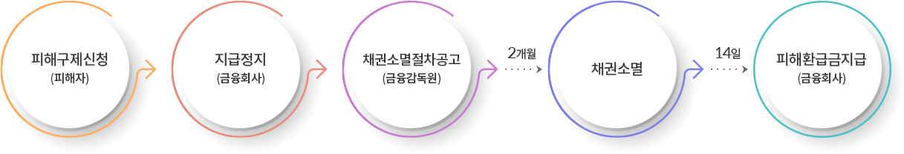

전기통신금융사기(대표통장)예방
금융사기에 당하지 않으려면 어떻게?
통장(카드)등을 양도ㆍ매매하면 아니 됩니다!!(대포통장)
-
1. 통장(카드)을 양도ㆍ매매하는 경우 통장 명의인은 민ㆍ형사상 책임부담과 함께 금융거래도 제한될 수 있으므로 어떠한 경우에도 통장(카드)을 양도ㆍ매매하여서는 아니됨
- 민사책임 예시 : 통장(카드)을 양도하여 동 통장(카드)이 범죄에 사용되자 통장명의인에게 공동불법행위자로서 손해배상책임(70%)을 부과
- 형사책임 근거 : 전자금융거래를 위한 접근매체의 양도ㆍ양수시 5년이하 징역 또는 3천만원이하 벌금(전자금융거래법 제6조 및 제49조)
- 현재는 대포통장 명의인이 통장(카드) 양도ㆍ매매가 불법이라는 것을 모르고 사기업자에게 넘겨주었다고 주장하여 수사당국에서 무혐의ㆍ기소유예 조치를 받는 사례가 많음. 그러나 이 경우에도 민사책임은 벗어나기 어려움.
- 2. 대출ㆍ취업등을 이유로 통장(카드)양도를 요구하는 행위는 대포통장 취득을 목적으로 하는 사기이므로 일절 응대하지 말아야 함
- 3. 통장(카드)을 양도ㆍ매매한 경우에는 즉시 해당통장(카드)의 발급금융회사에 거래(지급)정지 또는 해지를 요청하고 경찰서에 신고 할 것이며 신분증, 인감증명서등의 전달로 추가피해가 우려되는 경우에는 금융감독원(국번없이 1332)을 통하여 상담(정보노출피해자 등록등)이 가능.
- 4. 대포통장 명의인 계좌개설 제한등 : 통장(카드)양도이력이 있는 고객(대포통장명의인)에게는 향후 1년간 자유로운 예금계좌 개설을 제한
- 우체국 「입출금이 자유로운 예금 약관」을 개정을 통한 근거마련 완료
- 「지급정지 사실 통지서」를 개정하여 지급정지계좌 명의인에게 금융거래가 제한될 수 있음을 사전 통지
만약 금융사기에 당했을 때 어떻게 조치해야 하나요?
-
1. 우선 즉시 지급정지요청부터 하세요[금융기관 및 금융회사콜센터(우체국콜센터 ☎1588-1900), ☎112(경찰청), ☎1332(금감원)]
※ 사기금원이 입금되면 짧은 시간내에 인출되므로 최대한 빨리 지급정지조치부터 하여야 함
-
2. 경찰서에서 사건사고사실 확인서 발급하여 3일이내 정식신고 하여야 함
- 신고서류 : 지급정지요청서, 사건사고사실 확인원, 신분증, 개인정보수집 이용동의서, 피해구제신청서등
만약 금융사기에 당했을 때 피해구제는 어떻게 받을 수 있을까요?
- 1. 보이스피싱, 메신저 피싱의 경우에는 특별법에 의하여 사기이용계좌의 잔액 범위내에서 환급을 받을 수 있음
- 2. 스미싱에 의한 경우 이동통신사등 사업자에게 신고하여 구제
-
3. 물품사기인 경우에는 예금주와의 합의 또는 민사소송(부당이득반환청구, 손해배상청구) 등으로 구제 받을 수 있음
※ 2천만원 미만의 경우 소액심판제도 이용
※ 소액심판등 민사소송과 관련한 안내는 법률구조공단(☎132, 무료상담 및 소송대리 진행등)의 도움을 받으세요
- 4. 메모리해킹의 경우에는 전자금융거래 배상책임보험에 의하여 구제
피해금 환급 절차 안내
피해금 환급 흐름도

- 피해구제신청(피해자)
- 지급정지(금융회사)
- 채권소멸절차공고(금융감독원) 2개월
- 채권소멸 14일
- 피해환급금지급(금융회사)
피해금 환급 절차
-
1. (피해구제 신청) 피해자는 피해금을 송금ㆍ이체한 계좌를 관리하는 금융회사 또는 사기이용계좌를 관리하는 금융회사에 피해구제신청
- 피해구제 신청을 받은 금융회사는 다른 금융회사의 사기이용계좌로 피해금이 송금ㆍ이체된 경우 해당 금융회사에 지급정지 요청
- 2. (지급정지) 금융회사는 보이스피싱 피해자의 요청 등이 있는 경우, 입금내역 등을 확인 후 계좌 전체에 대하여 지급정지
-
3. (채권소멸절차) 금융회사는 지급정지 후 금감원에 채권소멸절차 개시 공고를 요청 → 금감원의 개시 공고 후 이의제기 없이 2개월이 경과하면 해당 계좌의 채권소멸
- 사기이용계좌 명의인은 채권소멸 공고기간중 사기계좌가 아니라는 사실을 소명하여 지급정지에 대해 이의 제기 가능
- 4. (피해환급금 결정ㆍ지급) 금감원은 채권소멸일로부터 14일 이내에 환급금액 결정 → 금융회사는 지체 없이 피해자에게 환급